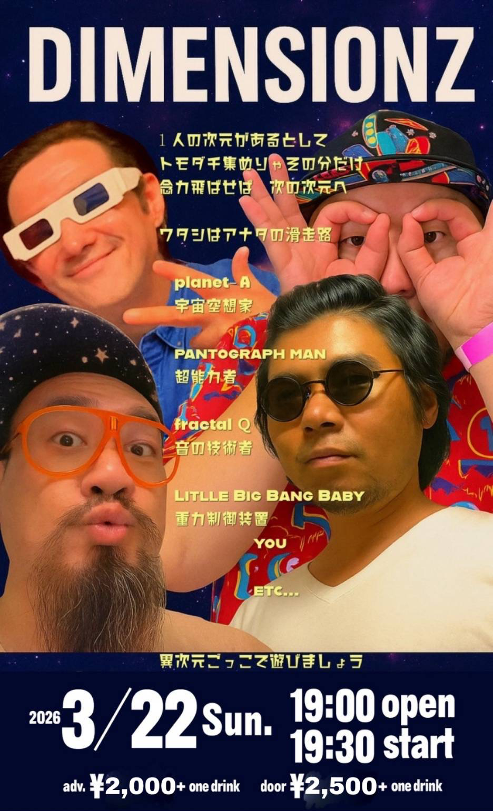

宙にスピーカーで音を送ろう
この度 DIMENSIONZの 『空想滑走路』は ヒップホップか ロックか、テクノか、 もしやUFOのエンジン音？
そんな音をまじめにまとめられんじゃない。 ならばNew Waveです。
わりわりはもはや Nu Waveなのです！
つまり、ぶっとんだ宇宙船。
ジャンルはもうあきらめました。 ジャンルのほうがあきらめました。
DIMENSIONZとは 宇宙と多次元で 本気にあそぶバンドです。
planet-A は放電した その日から ちょっと 時がズレた、、、
pantograph man は、 別の宇宙を見て 歌ってる。
多次元を行き来する Lil Big Bang Baby 全ての陸は彼に通ずる
黒穴の渦に針を落とす Fractal Q a.k.a.PPP 回す事から目が離せない
過去と未来をすこし混ぜる
それがDIMENSIONZ。
そして今回プロデューサーに Dr.gondria（ゴンドウトモヒコ氏）
メジャーでの活動家 だけど今回は 音を整えない。
むしろ 「もっと変でいい」 と言ってくれた
宇宙公認。
ある日、 少年時代の メモリーカセットを 再生してくれたんだ。
そして 過去と未来をすこし混ぜる
それはナイスなDIMENSIONZ
どこかで鳴っている。
その時滑走路は光っている。
リード曲「かえる skit」
それはどこ？いらっしゃい
昼か？夜か？ カエルの歌ね
曲がる 回る 景色何色？
ざく ざくと 進めば やがて BEATは落ちて
ん？ あれ？ちがってら
あなたが落ちて 小さくなる
サイケ。 トリップ。 踊ってごらん。
『ほんのわずかの』 ワルツにのって
気がつけば カエルのお腹で雨宿り
ずっと奥で
月は光り あなたをニヤり
日は光り たぶん あなたをニヤニヤと
『空想滑走路』は 音楽よりも 宇宙へ飛び立つ装置。
なんか気持ちいい。
2026年3月22日。 見えない滑走路が あらわれる。
発進の用意はいいかい?
＋featuring
◯◯◯（Ambi）
spoozin
Electric MJ（松江潤）
Mai Otonari
もふもふちゃん？
2026年3月22日（日）我々DIMENSIONZはストリーミング配信で10曲入りのアルバム「空想滑走路」をリリースする事に相成りました🙌
今回はそれに併せて同日、2026年3月22日（日）湯島の『道』にてリリースライブを開催します😊
日付：2026/3/22 Sun.
時刻：19:00 open 19:30 start
料金：adv. ¥2,000+ one drink / door ¥2,500 + one drink
会場：道4th
住所：東京都文京区湯島3-35-6 4F
地図：Google Mapsを表示
チケットご予約ご希望の方は、
メールの件名を「3/22ライブ予約」として、お名前、希望人数、 電話番号を明記の上、
info@miti44.comまで送信してください。
後日こちらより、確認メールをお送りいたします。

DIMENSIONZ
1人の次元があるとして
トモダチ集めりゃその分だけ
念力飛ばせば次の次元
ワタシはアナタの滑走路
planet-A
宇宙空想家
PANTOGRAPH MAN
超能力者
fractal Q
音の技術者
LITLLE BIG BANG BABY
重力制御装置
YOU
ETC...
異次元ごっこで遊びましょう
そして、今回一緒に遊んでくれる
KaIとYUUE
KaI
花・月・夜をモチーフに、繊細な感情と静かな強さを描くR&Bシンガー。宮崎と東京を中心に活動している。怖さも弱さも隠さず、ありのままの声で夜のすきまを照らすような歌声は、各所で話題となっている。
YUUE
Sax player/beat maker
サックスを鍬田修一、石川周之助氏に師事。埼玉県、東京都を中心に演奏活動を行っている。演奏ジャンルはjazz,hip hop,pops,funkと多岐に渡る。サンプラーやエフェクターを駆使した演奏を得意とする。2025年にアルバム「STNEM」をリリース。